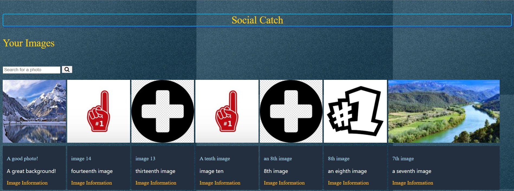

A photo-posting website Social Catch
Done Using Handlebars, CSS, JavaScript, and Node.js
Done Using Handlebars, CSS, JavaScript, and Node.js
This website was done during the first summer term of my time at SFSU in 2020 for a web development course. For the duration of the term, all students of this course were required to independently develop a website of their own preference. For my case, I decided to do a website that had involved posting photos to a particular news feed, and being able to share it with other logged in users.
When piecing together the project, I did several coding using handlebar classes, CSS, JavaScript, and SQL. The SQL was done using MySQL Community Edition. The JavaScript was mainly used to execute all the primary functions of the website (such as going from page to page, utilizing the search bar, posting photos, and linking with the database queries in the backend). As for the handlebar classes, each of them served as the frameworks of the website (the grids, sections, the layout, etc.), where the CSS added the stylish features (color, text styles, font sizes, background, etc.).
In the end of the project once it was finished, I was successfully able to create an account, log into it using sessions, and then have the capability to post photos, where these would be added into the news feed consisting of photos posted by other users. I included a function that would allow for the user to search for specific photos, in which this is done by searching through the database full of queries, and identifying the proper element that consists of a matching name. Once the user posts a photo, a new query is added into the database with a unique id and a name to be referenced in the future once a search is done. The user will have the capability to log out of the session, and be able to log back in using the matching username and password the person has signed up with during the registration process.